A colour for every cloud
Each cloud keeps one colour everywhere: its slice of the ring, its bar in the sidebar, the header of its own page. Two accounts on the same service get two colours, so Personal and Work are never a coin toss.
43%of 5.72 TB
Google Drive, OneDrive, Dropbox, S3, your NAS and fifty more services, side by side on your Mac. See what’s free, open anything in Finder, copy from one cloud to another.
macOS 15 or later. Apple silicon and Intel. Signed and notarized. GPL‑3.0.
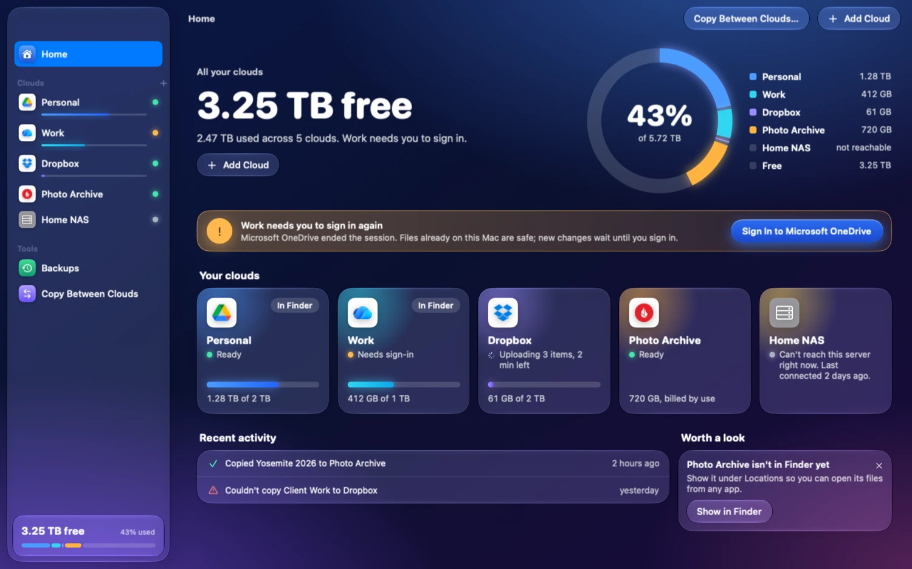
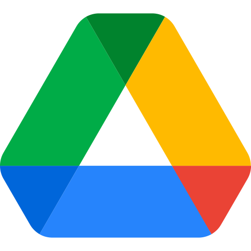
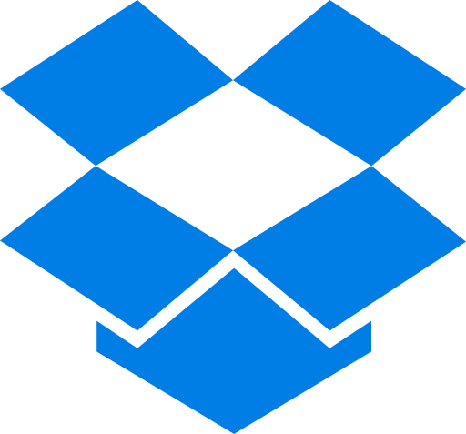
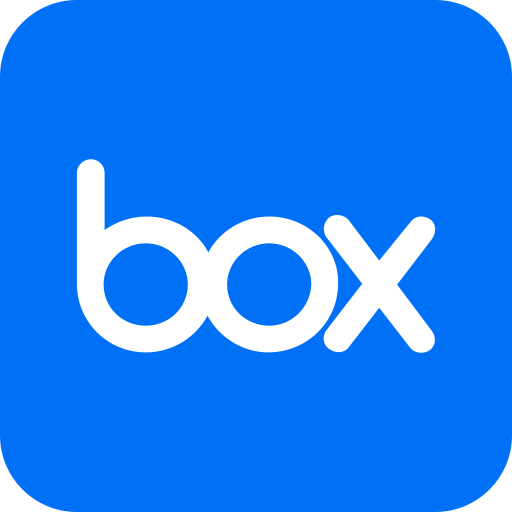
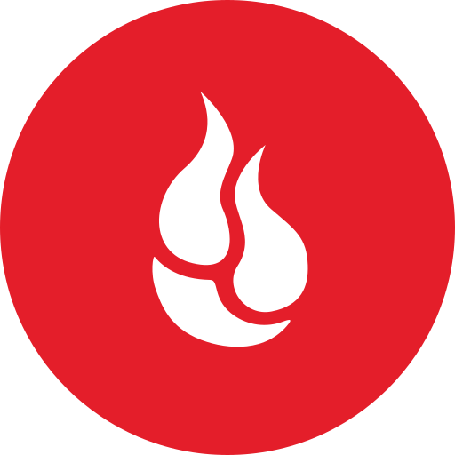
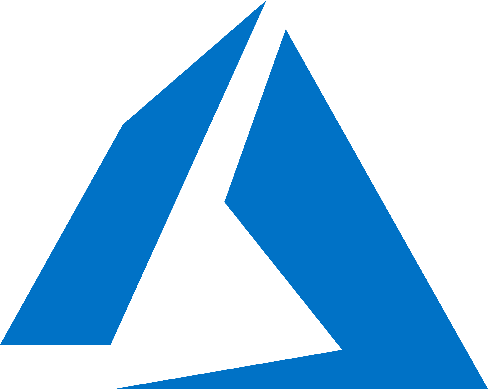
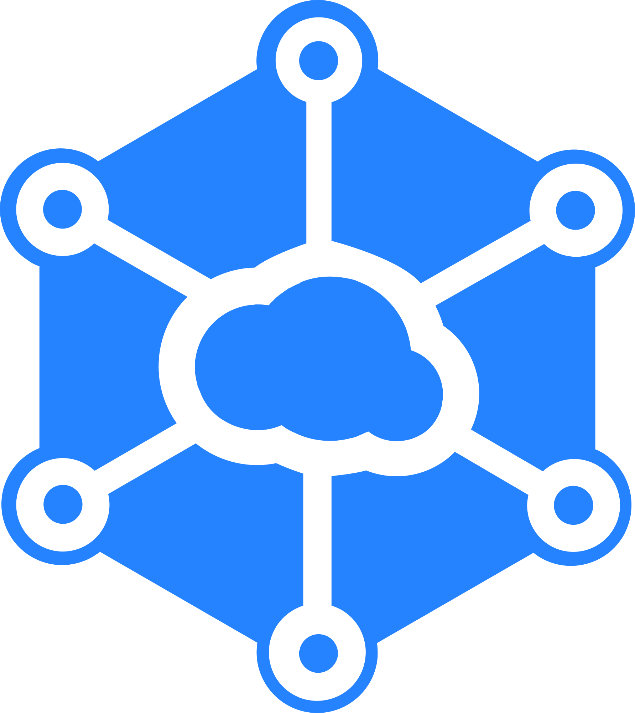
And SFTP, WebDAV, SMB and everything else rclone speaks. More than fifty services, no account with Nimbus for any of them.
Nimbus opens on Home. One number says how much room you have left across every cloud. A ring shows who is using it. Each cloud gets a card with a status in plain words, and when something needs you, the button that fixes it is already there.
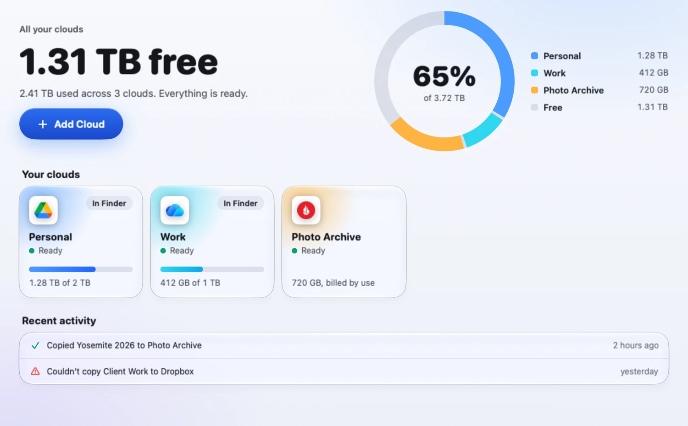
“Ready.” “Needs sign‑in.” “Can’t reach this server right now.” The engine’s vocabulary stays in Settings, under Advanced.
When a cloud ends your session, Home says so and offers the sign‑in button. Files already on your Mac stay safe; new changes wait until you’re back.
Quiet suggestions, like showing a cloud in Finder, with one click to do it and an × to dismiss it for good.
Nimbus has been redrawn from the window in. Deep sky behind glass, large rounded numerals, one bright button per screen, and text that holds a 4.5:1 contrast ratio at every point of the sky behind it. Under it all, the same sidebar, sheets and shortcuts your Mac has always had.
Each cloud keeps one colour everywhere: its slice of the ring, its bar in the sidebar, the header of its own page. Two accounts on the same service get two colours, so Personal and Work are never a coin toss.
43%of 5.72 TB
720 GB, billed by use
Pay‑as‑you‑go storage has no ceiling, and a pooled work plan’s limit isn’t yours. Nimbus counts what those clouds hold and leaves them out of “free”, so the big number is one you can plan around.
On macOS 26 and later, cards, sheets and buttons are the system’s own Liquid Glass. On macOS 15 they are drawn to match, and with Reduce Transparency on they turn solid.
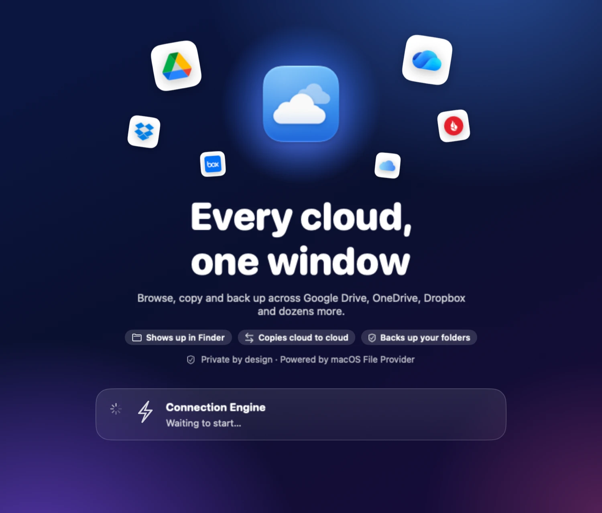
One screen, three promises, then straight to adding your first cloud.
Pick a cloud in the sidebar and you get its header in its own colour, how full it is, and four tabs: Files, Transfers, Finder and Settings. The file list behaves the way Finder’s does, because Finder was the bar.
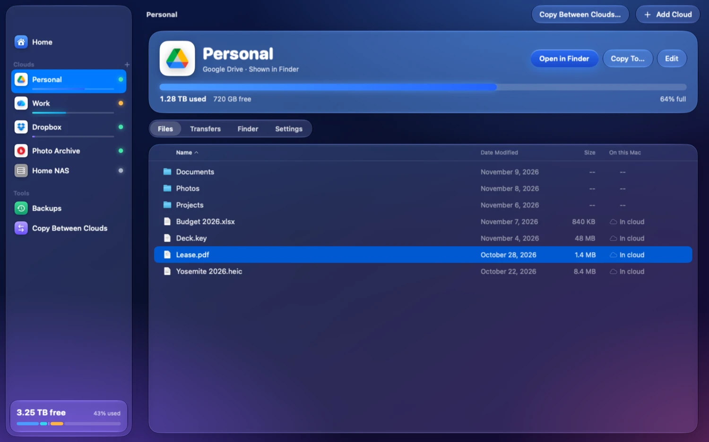
A column says where each file lives: in the cloud, downloading, or already on this Mac. In words, with a glyph beside them.
Click, shift‑click, ⌘‑click. Type a name to jump to it. Space for Quick Look. Column headers that sort.
Files draw with the system’s own document icons and Finder’s folder, so a listing looks like one of Finder’s.
Drop files from one cloud onto another. Nimbus asks once how to treat duplicates, then shows the copy’s progress.
A File Provider extension lists each cloud under Locations, with Nimbus’s own two‑cloud symbol beside it. Files download when you open them, edits go back up, and macOS manages the local copies. Or mount a cloud the classic way as a network volume. Your choice, per cloud.

Photos and PDFs in the cloud show real previews in Finder, made on demand and cached, so you can find the right file without pulling it down first.

Pin a file or folder and it stays downloaded. Finder’s own “Keep Downloaded” and “Remove Download” commands work too.
Save a document in any app, make a folder, rename, move or trash, all from Finder. The extension carries each change to the cloud.
Add or rename something from another device or the web and Finder picks it up. No re‑import, no relaunch.
Right‑click a file in Finder and Nimbus asks the cloud for a public link and puts it on your clipboard. Only for clouds that can.
Choose a service, name it, sign in. For Google Drive, OneDrive, Dropbox and friends, Nimbus opens the provider’s own sign‑in page in your browser and never sees your password. For S3, SFTP and WebDAV it asks what that service needs and nothing more.
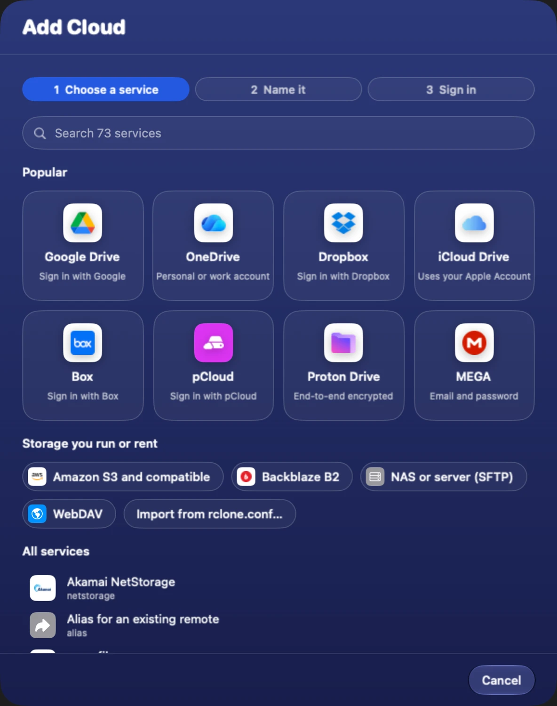
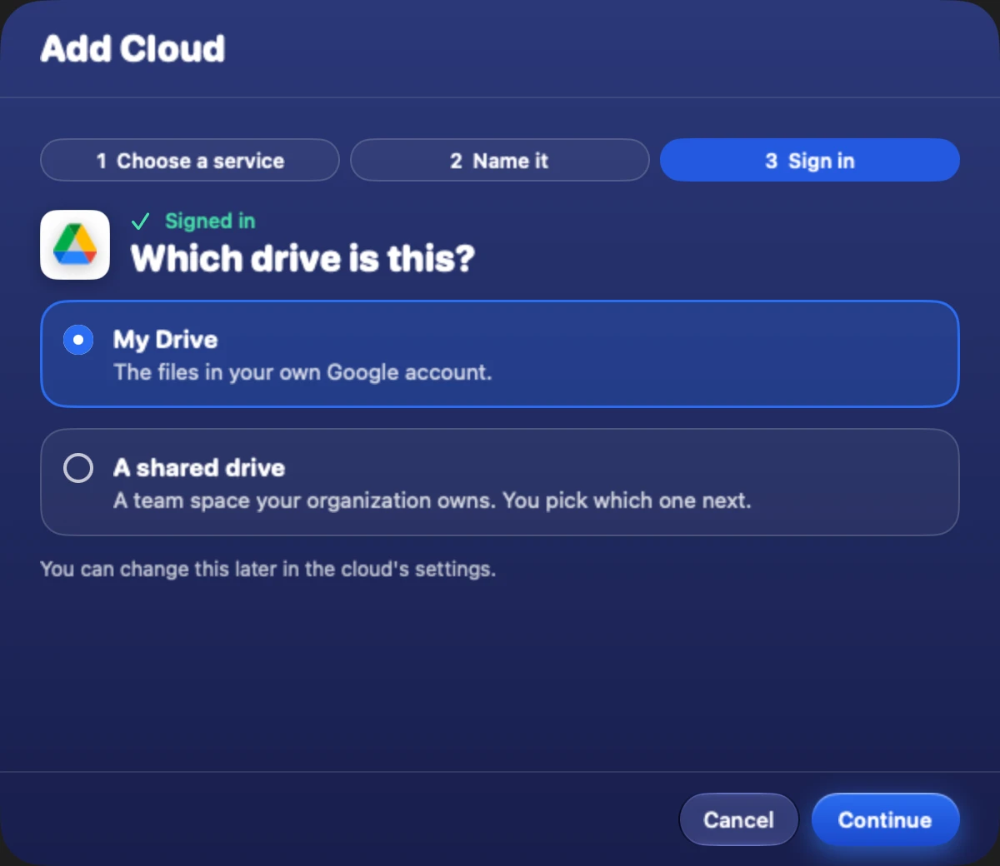
“Which drive is this?” instead of a yes or no about team drives. Fields are labelled by what you’d call them, not by their option names.
Advanced fields are one switch away. Most people never need to flip it.
Nimbus reads and writes the standard config file. The command line keeps working next to it, and an existing file imports with a preview.
Cancel midway and no partial or signed‑out cloud is left behind.
Save a backup once: a folder on your Mac, a place in a cloud. From then on it’s a single button. Before a backup removes or replaces anything, Nimbus shows you exactly what, and waits.
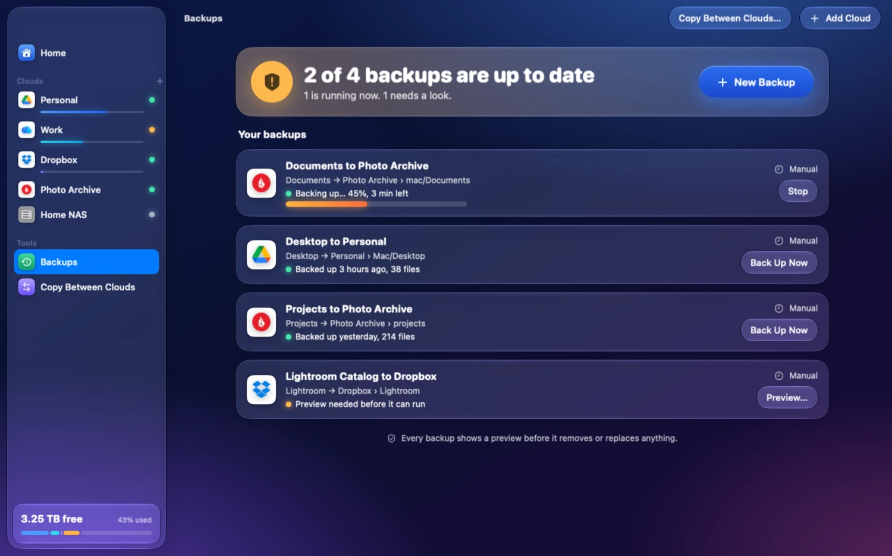
“2 of 4 backups are up to date. 1 is running now. 1 needs a look.” Each backup then says when it last ran and how many files it carried.
For one‑off moves, pick a source and a destination, any cloud or any folder on this Mac, and copy or sync between them.
A plain‑language speed setting limits bandwidth, so a big job never takes over your connection.
No account. No sign‑in with Nimbus. No telemetry. No update pinging. Here is the complete list of what talks to what.
| Who | When | Where |
|---|---|---|
| rclone, to the providers you configured | When you browse, copy, sync or open a file | Your clouds only |
| rclone, to the provider’s sign‑in page | Once per provider that signs in on the web, during setup | Through your browser |
| Anything else | Never | There is nothing else |
Nimbus is GPL‑3.0‑or‑later. You can read every line that runs on your Mac.
The app and its Finder extension talk to the same local rclone through RcloneKit, a typed Swift client for rclone’s remote‑control API, over loopback. No provider is reimplemented in Swift.
SwiftUI with AppKit where it draws better: the file table is a virtualized NSTableView hosting SwiftUI rows. Zero third‑party Swift packages, and a pre‑build check fails the build if one appears.
The setup flow and listing behaviour are pinned by tests that run the actual binary, so an rclone upgrade that changes behaviour fails loudly instead of silently.
Showing or hiding a cloud in Finder records your intent first, reconciles the File Provider domain in the background, and rolls back if registration fails.
| Nimbus | Mountain Duck | ExpanDrive | Cyberduck | rclone CLI | |
|---|---|---|---|---|---|
| Price model | Free, source and signed builds alike | One‑time license per major version | One‑time license per major version* | Free, paid on the Mac App Store | Free |
| Open source | Yes, GPL‑3.0 | No | No | Yes, GPL‑3.0 | Yes, MIT |
| UI | Native SwiftUI and AppKit | Cocoa over a Java core | Electron* | Cocoa over a Java core | None |
| Finder / mount | File Provider and NFS | File Provider and FUSE‑style | Mounts* | No mounting | FUSE or NFS |
| Providers | Everything rclone supports, 50+ | Its own, about 20* | Its own* | Its own, about 20* | 50+ |
| Reuses your rclone config | Yes | No | No | No | n/a |
* Not verified against a current release. Corrections welcome.
Nimbus costs nothing. Not the source, not the signed app, and that will not change. Casa Vargas sells two apps, each bought once and kept, and they pay for the time. If Nimbus is useful to you, this is the way to say thanks.


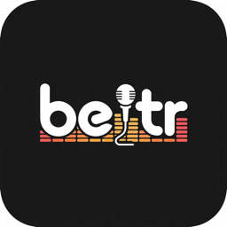
Karaoke from the music you already own.
Beltr turns the songs already on your computer into karaoke on your TV, and every phone in the room becomes a remote and a mic. Mac, Windows and Linux, with free phone and TV companions.
$19.99 once, five songs free to try
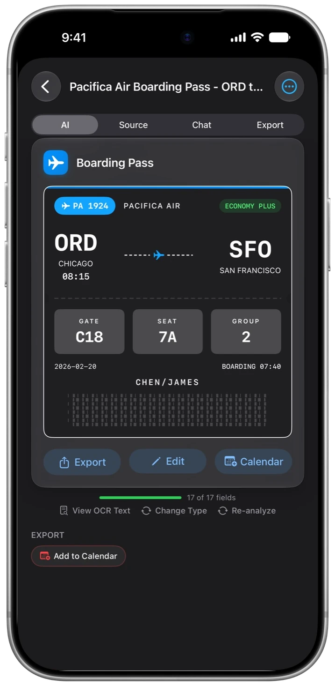
A document scanner that reads what it scans.
OneScribe reads what you scan and turns it into organized, searchable details, with the AI running on your iPhone or iPad. Nothing you scan leaves the device.
Free to scan; Pro is $9.99 once
Free. Signed with a Developer ID certificate and notarized, so Gatekeeper opens it without a warning. Pre‑1.0, used daily by its author, and still growing.
brew install rclone.sha256 sits beside every DMG